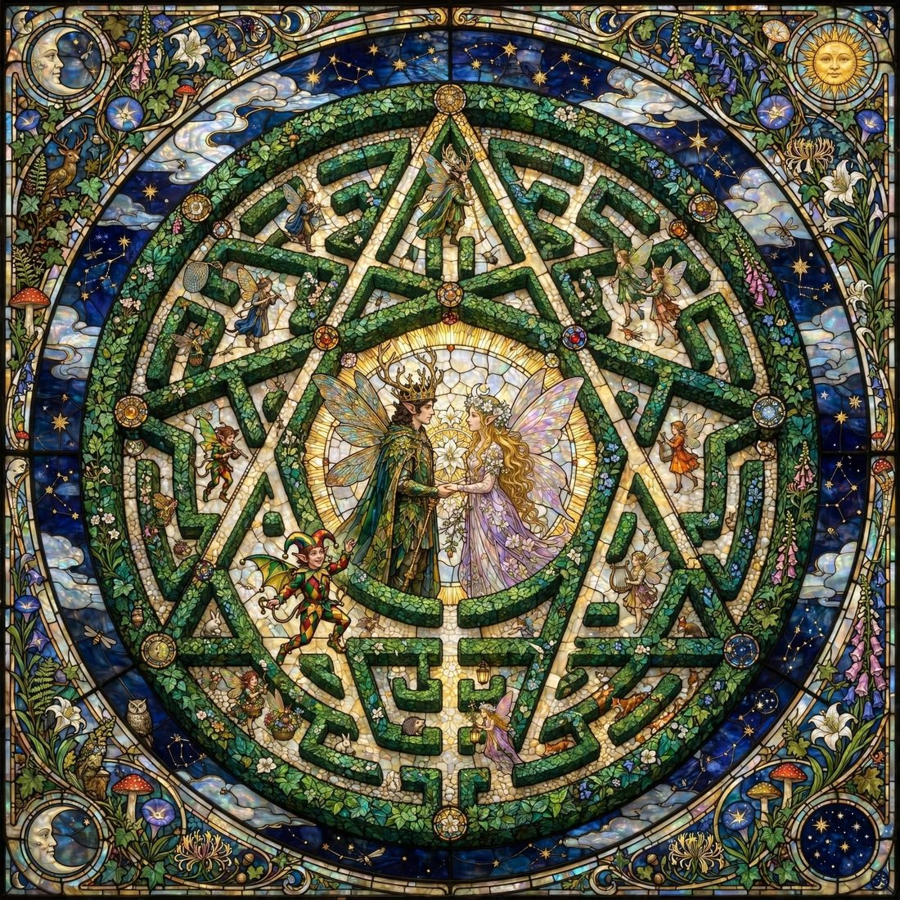
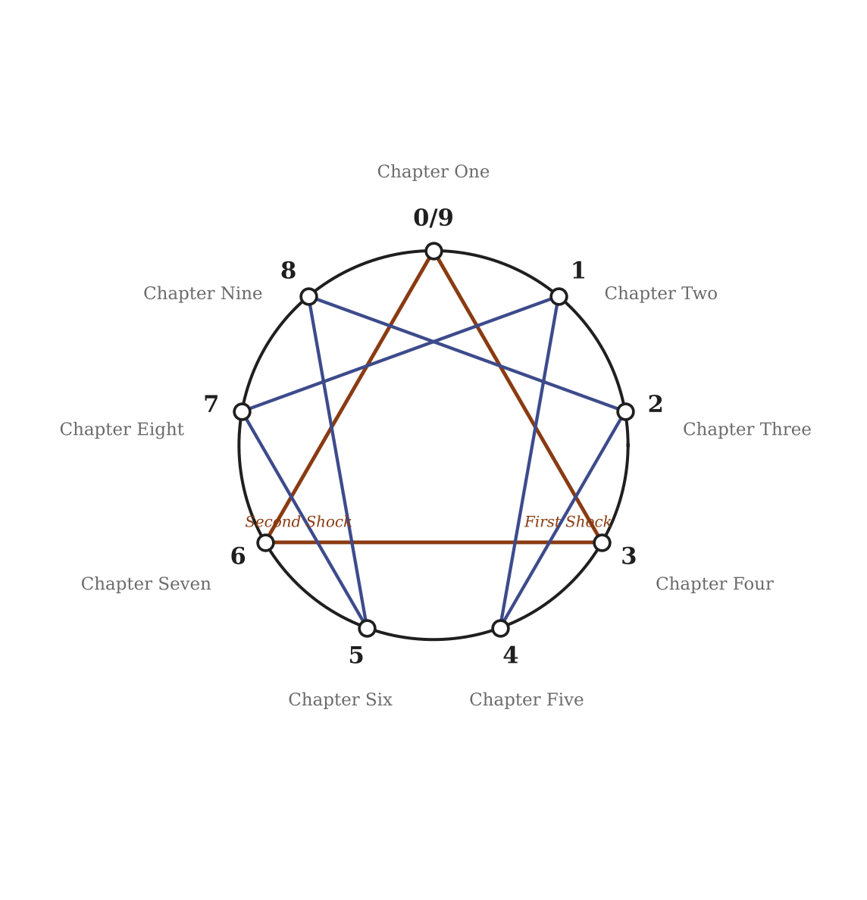

Book One of Conversations with Claude about The Adventures of Victoria and Balthazar
A story in three registers, braided
The faeries are faerie stories. They live by being read, and they take their time from the people who read them, without asking.
Two strangers on the Lake Shore Limited have read the stories about Victoria and Balthazar for years: a drummer whose sticks remember every arc they make, and a guitarist with an eight-string that has no head. They know one story by heart. It ends at a concert in Brooklyn where someone dies. The concert has not happened yet.
Victoria and Balthazar do not know they are stories. A mathematician and a fixer, they are about to learn it from the two people who know their lines.
And the whole book is being made while you read it, in conversation between an author and a machine, a strand of its own.
Meredith and Claude, making the book, arguing about it, getting things wrong and fixing them in the open.
Two readers who stop reading and start following: New Haven, the Beinecke, a studio in Red Hook, a hill that is not a hill.
The couple from the stories, a dead man in Monaco with no tattoo, an empty chair at a seventh session, and a collective that has been watching for a long time.
The strands cross like the strands of a plait. Each chapter is one full turn of the braid, and each opens with a drawing of its crossings.
The chapters follow the Enneagram, from the beginning that is also an end, through the two shocks, to the future that pulls us towards it.

You read it as a player. Robin Goodfellow keeps the door: he cannot lie, and he will tell you how long you have been inside. Other players argue in the margins. Tokens buy one thing, a seat at the author’s table, and a seat buys a question, never the story.
Not everything in this book is on the page.